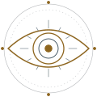
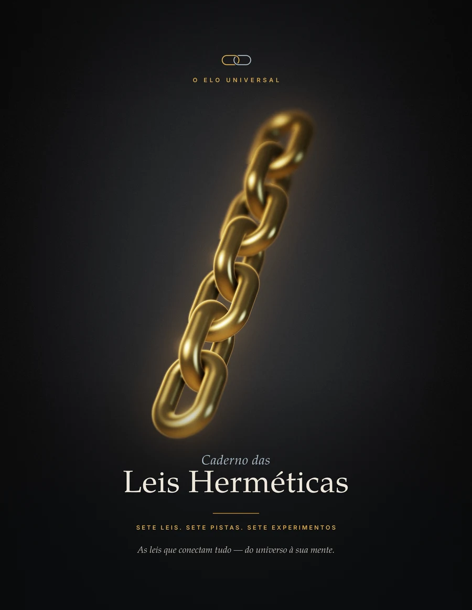
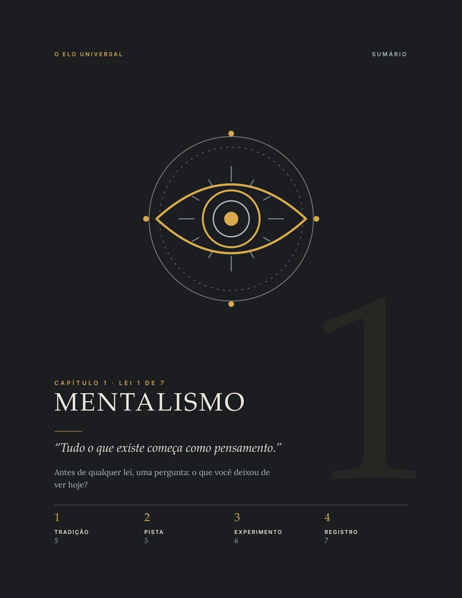
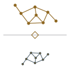
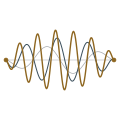
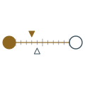
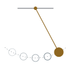
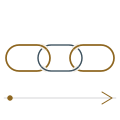
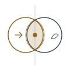
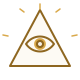

Lei 1Mentalismo
“O pensamento repetido”
Duração: 1 diaO caderno prático para investigar as sete leis ancestrais através de experimentos diários. Você não precisa acreditar em nada: precisa observar.

Três chaves ancestrais guardam o segredo operacional das Leis Herméticas. O que antes era velado em enigmas, agora se revela diante dos seus olhos em prática direta.
Presente na arquitetura sagrada e nos centros de poder: a Primeira Lei ensina que a matéria nada mais é do que o reflexo da mente que a sustenta e observa.
“O Todo é Mente; o Universo é Mental.” A realidade física se molda à frequência da sua consciência. Aquilo que você observa e sustenta com convicção se materializa.
O emblema dos construtores na Maçonaria: a arte secreta de medir, alinhar e operar as forças ocultas para erguer resultados tangíveis no mundo físico.
“Como acima, assim abaixo.” O compasso traça o plano no espírito e o esquadro talha a pedra na matéria. Para transformar o efeito visível, alinhe a causa invisível.
Os triângulos entrelaçados da tradição alquímica: “O que está em cima é como o que está embaixo”. O código que altera a realidade externa a partir do padrão interior.
“Nada está parado; tudo se move; tudo vibra.” O selo entrelaça o fogo solar e a água lunar. Mudar a sua polaridade interna desfaz a ilusão do conflito externo.
Você provavelmente já ouviu falar das Sete Leis. Já assistiu a dezenas de vídeos, leu trechos do Caibalion e concordou com cada frase filosófica. Mas no dia seguinte, a sua realidade continuou exatamente igual.
Existe um motivo histórico para isso: as explicações públicas foram deliberadamente desenhadas para terminar onde a verdadeira prática deveria começar.
Entregaram citações poéticas para manter a maioria entretida na contemplação passiva. A chave operacional, o método exato de testar, aplicar e transmutar essas leis no cotidiano, sempre foi guardada sob sete chaves.
“Toda a verdade já está diante dos seus olhos, porém oculta sob séculos de teoria estéril. O Elo Universal não foi escrito para convencer quem duvida. Ele foi forjado para despertar aqueles que já estão no caminho.”
Se uma lei descreve o funcionamento do cosmos, ela não é teoria de estante: ela deixa rastros concretos em cada hora do seu dia. Rastros que você finalmente aprenderá a enxergar, registrar e usar a seu favor.
Você não precisa de rituais inalcançáveis nem de crenças cegas. Precisa do método exato para decodificar e acionar as Sete Leis no seu dia a dia.
O conhecimento que sobreviveu aos séculos, preservado por iniciados no antigo Egito e escolas de mistério. O mapa exato de como a mente, o ritmo e a polaridade governam cada acontecimento ao seu redor.
A transmutação da sabedoria oculta em evidência diária. Em vez de apenas acreditar, você ativa os experimentos práticos, anota os rastros no caderno e comprova as leis operando diante dos seus próprios olhos.
Uma jornada estruturada e repetida em cada capítulo para transformar o mistério hermético em domínio prático e pessoal.
A revelação clássica da lei transmitida pelos mestres ancestrais, decodificada em linguagem direta para você compreender o mecanismo oculto.
O ponto exato onde a física moderna e o estudo da mente encontram e confirmam aquilo que as tradições esotéricas já praticavam há milênios.
O protocolo guiado com linha do tempo de poucos dias para você aplicar a lei no seu cotidiano e observar a reação da realidade à sua volta.
O espaço sagrado de anotação guiada para selar as suas percepções, registrar os padrões que se repetem e consolidar o seu poder de observação.

Página real de abertura do Capítulo 1 no caderno (A Lei do Mentalismo)
Sete protocolos estruturados para você acionar cada uma das leis ancestrais e presenciar os padrões se revelando na sua rotina.

Lei 1“O pensamento repetido”
Duração: 1 dia
Lei 2“O gesto e o padrão”
Duração: 3 dias
Lei 3“Três momentos”
Duração: 1 dia
Lei 4“A escala e o passo”
Duração: 2 dias
Lei 5“O mapa da semana”
Duração: 7 dias
Lei 6“A cadeia de causas”
Duração: 4 dias
Lei 7“Iniciar e gestar”
Duração: 4 diasQuer sentir como as Sete Leis reagem quando colocadas à prova no seu dia a dia?

1ª Chave Oculta“O Todo é Mente; o Universo é Mental.” Antes de adquirir o caderno completo, teste a lei matriz que sustenta todo o hermetismo e as ciências ancestrais na sua própria vida, sem pagar nada.
A explicação clássica sem a censura de teorias acadêmicas estéreis, revelando a engrenagem exata do pensamento.
O protocolo guiado de 24 horas para você testar como a sua mente atrai evidências e sincronias no seu dia.
O espaço sagrado para anotar os acontecimentos e comprovar o padrão mental se repetindo diante dos seus olhos.
“Aquele que compreende a verdade da natureza mental do Universo está no caminho real do domínio.”
O Caibalion · Tradição dos Três IniciadosInforme onde devemos enviar o documento confidencial em PDF de alta resolução:
Pagamento único · Sem mensalidades · Sem escassez simulada
O Elo Universal não é uma pessoa. É uma ideia que representa a evolução humana e fala por vozes diferentes, em momentos diferentes. Elara é a primeira.
Elara é uma personagem criada com inteligência artificial.Acesso completo ao material prático e aos dois bônus exclusivos.
7 capítulos estruturados, 7 pistas de pesquisa, 7 experimentos práticos e páginas de registro guiado.
Formatos digitais de alta resolução para tela e impressão.
Visão geral dos sete experimentos, suas durações e a ordem integrada de prática, do primeiro passo ao fechamento.
Guia visual complementar em PDF.
O compêndio de rigor científico: detalhamento do que a tradição afirma, o que a ciência sugere e o que ninguém pode concluir.
Inclui lista completa de fontes e referências.
Veja como um estudo contemporâneo sobre redes cósmicas e neurais revela os mesmos padrões que os sábios antigos já descreviam há milênios.
“O que está embaixo é como o que está em cima, e o que está em cima é como o que está embaixo.” (Tábua de Esmeralda / Kybalion, 1908).
A ideia central: certos padrões estruturais se repetem entre escalas muito diferentes, do macrocosmo ao microcosmo.
Em 2020, o astrofísico Franco Vazza e o neurocirurgião Alberto Feletti compararam a rede cósmica de galáxias à rede de neurônios do cérebro humano.
Apesar de uma diferença de escala de mais de 27 ordens de grandeza, acharam níveis parecidos de conectividade e auto-organização.
É um estudo-piloto com aproximação estatística. Semelhança visual ou matemática de redes não prova a lei hermética.
A ciência não chama isso de lei e não afirma que o universo seja um cérebro ou que seu comportamento reflita o cosmos.
Nota de transparência: O Capítulo 1 traz referências clássicas de psicologia cognitiva (Simons & Chabris; Nickerson) sem link DOI direto. A página apresenta apenas fontes formalmente citadas.
Respostas diretas sobre o propósito, o método e a entrega do caderno.
Não. A tradição hermética entra como mapa de leitura, não como doutrina. Não há crença a adotar nem comunidade a seguir para usar o caderno.
Não. A ciência aparece como pista ou analogia, e cada pista vem acompanhada do que ela não mostra. Onde não há respaldo formal, o caderno não finge que há.
Não. A promessa é estritamente de observação: um experimento curto por lei, com registro do que você notou no seu dia a dia.
O acesso é digital e imediato após a confirmação do pagamento. Você receberá o link para download dos arquivos em PDF no seu e-mail cadastrado na plataforma de checkout.
Para quem procura promessas de resultado rápido, prova científica definitiva das leis herméticas ou uma espiritualidade festiva e cheia de slogans.
A maioria das pessoas passa a vida inteira reagindo aos ciclos da realidade sem jamais compreender a mecânica oculta por trás de cada acontecimento. Elas sofrem o ritmo, a polaridade e a vibração como vítimas passivas.
O Elo Universal foi forjado para quebrar esse véu. Sete leis fundamentais, sete pistas da realidade e sete experimentos práticos de campo para tirar você da teoria morta e colocar o domínio consciente em suas próprias mãos.